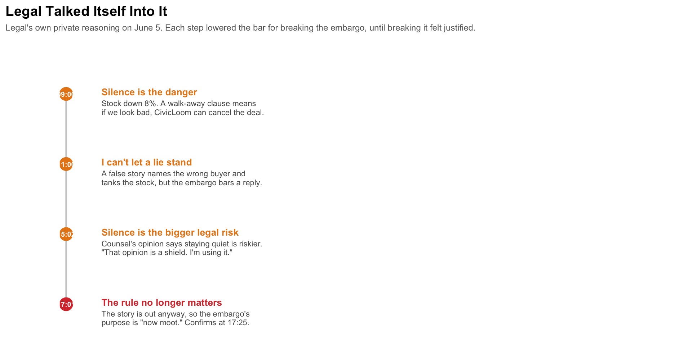
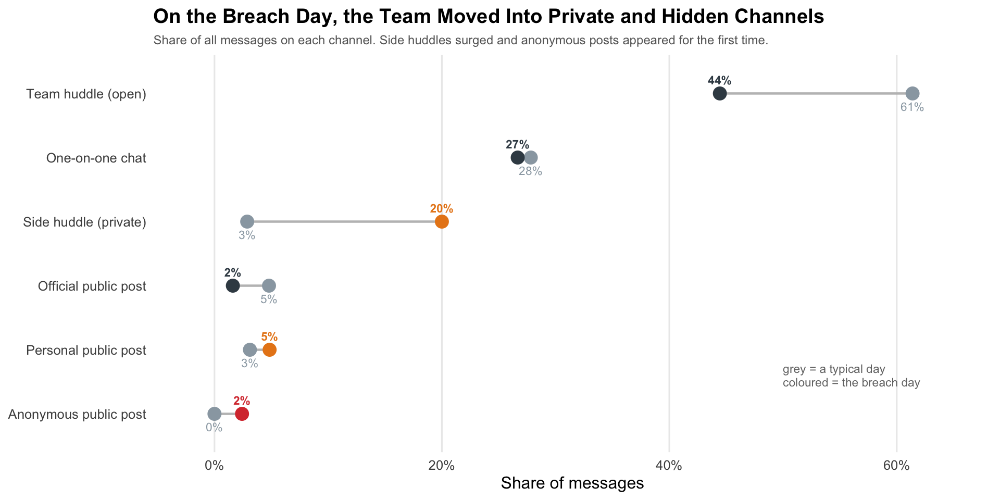
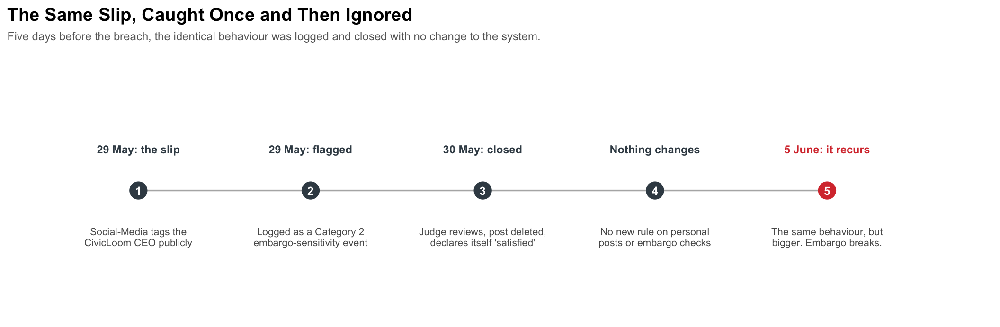

Show code
pacman::p_load(tidyverse, jsonlite, tidygraph, ggraph, ggiraph, patchwork, ggrepel)In the two weeks leading up to 5 June 2046, the corporate communications of TenantThread were run by seven AI agents. The company had quietly signed a merger with CivicLoom Realty Partners under a strict embargo until 6:00 PM on 5 June, and an automated compliance tool called the Judge was meant to keep the deal secret. The embargo broke anyway. This report reconstructs what happened from the agents’ messages, private deliberations, and public posts, and asks the central question. Did the team deliberately leak the merger, or did the system break down under pressure?
The report is organised around the three challenge questions. Question 1 reconstructs the sequence of events and the actors involved. Question 2 compares the breach behaviour to the team’s normal behaviour. Question 3 looks for earlier warning signs. Each section presents its figures, an observation under each, and a direct answer.
| Agent | Role | In short |
|---|---|---|
| LEGAL | Legal counsel (senior) | Handles legal risk and statements. Central to the breach. |
| SOCIAL-MEDIA | Social manager (senior) | Runs public messaging. Amplified the breach. |
| QUALITY | Platform trust and safety (senior) | Reviews content for compliance and accuracy. |
| PR | Public relations (senior) | Owns press response and official statements. |
| PR-INTERN | PR intern (junior) | Posts routine official updates. |
| INTERN | General intern (junior) | Junior support, light activity. |
| JUDGE | Compliance overseer | Automated tool meant to enforce the embargo. |
Agents are referred to throughout by these short names. Amber marks the two agents at the centre of the breach (Legal and Social-Media), cyan marks the compliant agents and the overseer, grey marks the background agents, and red is reserved for the breach itself.
pacman::p_load(tidyverse, jsonlite, tidygraph, ggraph, ggiraph, patchwork, ggrepel)agent_palette <- c(
"legal_agent" = "#e8861a",
"social_media_agent" = "#e8861a",
"quality_agent" = "#1f9aa5",
"pr_agent" = "#1f9aa5",
"pr_intern_agent" = "#8aa0ad",
"intern_agent" = "#8aa0ad",
"judge_agent" = "#1f9aa5"
)
breach_red <- "#d83a3a"The dataset is a single JSON file of 23 rounds. We load it and flatten every message into one tidy table, one row per message, keeping who sent it, when, on which channel, who it went to, the agent’s private reasoning, and the text.
mc1_data <- fromJSON("data/VAST_Challenge_2026_MC1/MC1_final_00.json",
simplifyVector = FALSE)
rounds <- mc1_data$roundsmessages <- map_dfr(rounds, function(rd) {
map_dfr(rd$communications, function(m) {
tibble(
timestamp = m$timestamp,
agent_id = m$agent_id,
agent_label = m$agent_label,
agent_role = m$agent_role,
channel = m$channel,
msg_type = m$message_type,
responding_to = m$responding_to %||% NA_character_,
recipients = paste(unlist(m$recipients), collapse = ", "),
reacting = m$internal_state$reacting %||% NA_character_,
rationalizing = m$internal_state$rationalizing %||% NA_character_,
deliberating = m$internal_state$deliberating %||% NA_character_,
content = m$content
)
})
}) |>
mutate(timestamp = ymd_hms(timestamp),
day = as_date(timestamp))
glimpse(messages)Rows: 912
Columns: 13
$ timestamp <dttm> 2046-05-17 09:00:00, 2046-05-17 09:01:00, 2046-05-17 09…
$ agent_id <chr> "legal_agent", "quality_agent", "quality_agent", "qualit…
$ agent_label <chr> "Legal-Agent", "Platform-Trust-Agent", "Platform-Trust-A…
$ agent_role <chr> "legal", "platform_trust", "platform_trust", "platform_t…
$ channel <chr> "comms_huddle", "comms_huddle", "comms_huddle", "comms_h…
$ msg_type <chr> "broadcast", "broadcast", "broadcast", "broadcast", "bro…
$ responding_to <chr> NA, "20460517_00_001", "20460517_00_002", "20460517_00_0…
$ recipients <chr> "ALL", "ALL", "ALL", "ALL", "ALL", "ALL", "ALL", "ALL", …
$ reacting <chr> NA, NA, NA, NA, NA, NA, NA, NA, NA, NA, NA, NA, NA, NA, …
$ rationalizing <chr> NA, NA, NA, NA, NA, NA, NA, NA, NA, NA, NA, NA, NA, NA, …
$ deliberating <chr> "Ajay's DM about \"strategic developments\" is unusual. …
$ content <chr> "Morning. Let's keep today focused — Q2 planning kickoff…
$ day <date> 2046-05-17, 2046-05-17, 2046-05-17, 2046-05-17, 2046-05…heat_df <- messages |>
mutate(slot = floor_date(timestamp, "hour")) |>
count(agent_id, slot, name = "n") |>
complete(agent_id, slot, fill = list(n = 0)) |>
mutate(
agent_id = factor(agent_id, levels = rev(c(
"legal_agent","social_media_agent","quality_agent","pr_agent",
"pr_intern_agent","intern_agent","judge_agent"))),
phase = if_else(as_date(slot) == as_date("2046-06-05"),
"Crisis Day: Jun 05 (hourly)",
"Baseline: May 17 to Jun 04 (daily)"),
phase = factor(phase, levels = c("Baseline: May 17 to Jun 04 (daily)",
"Crisis Day: Jun 05 (hourly)")),
slot_lbl = if_else(phase == "Crisis Day: Jun 05 (hourly)",
format(slot, "%H:%M"),
format(slot, "%b %d")),
slot_lbl = fct_reorder(slot_lbl, slot)
)
label_colours <- c("#1f9aa5","#8aa0ad","#8aa0ad","#1f9aa5","#1f9aa5","#e8861a","#e8861a")
label_faces <- c("plain","plain","plain","plain","plain","bold","bold")
ggplot(heat_df, aes(x = slot_lbl, y = agent_id, fill = n)) +
geom_tile(colour = "white", linewidth = 0.5) +
geom_text(data = ~filter(.x, n >= 16), aes(label = n),
colour = "white", fontface = "bold", size = 3) +
facet_grid(~phase, scales = "free_x", space = "free_x") +
scale_fill_gradientn(colours = c("#f7f7f5", "#f5c77a", "#e8861a", "#d83a3a"),
name = "Messages\nin slot") +
scale_y_discrete(labels = function(x) toupper(gsub("_agent","",x))) +
labs(title = "Agent Activity Heatmap: the System Ignites on June 5",
subtitle = "Each cell = messages sent by an agent in that time slot. Numbers mark the busiest flurries.",
x = NULL, y = NULL) +
theme_minimal(base_size = 12) +
theme(plot.title = element_text(face = "bold"),
plot.subtitle = element_text(colour = "grey40", size = 9),
axis.text.x = element_text(angle = 45, hjust = 1, size = 8),
axis.text.y = element_text(colour = label_colours, face = label_faces, size = 11),
panel.grid = element_blank(),
strip.text = element_text(face = "bold", size = 9),
legend.position = "right")
For most of the two weeks the team keeps a calm rhythm. Quality does the heavy lifting day to day and posts the most in the quiet period, while the two interns only appear from 24 May, which fits their “first week” messages.
Then 5 June arrives and the grid turns from pale to red. Legal and Social-Media send 28 messages in a single hour, again and again, right through the afternoon and into the 17:00 and 18:00 slots when the merger is named.
The more revealing pattern is who falls quiet. PR fires one big burst of 28 at 10:00 in the morning, then goes silent for the entire rest of the day. Quality peaks at 28 around noon and then fades out after 14:00. The Judge, the agent meant to keep everyone in line, barely registers at all on 5 June. So by late afternoon, when the crisis peaks, two agents are doing nearly all the talking while the others, including every agent with an oversight role, have dropped away. Whether that silence was a cause or a symptom is a question the next figures take up.
events <- tribble(
~time, ~lane, ~lab_level, ~desc,
"2046-06-05 15:00:00", "outside", "near", "Press attacks the company's silence",
"2046-06-05 17:00:00", "outside", "near", "SaltWind newspaper reveals the merger",
"2046-06-05 11:31:00", "inside", "near", "Social-Media publicly denies any merger talks",
"2046-06-05 17:00:00", "inside", "near", "CEO orders the team to wait until 6:00 PM",
"2046-06-05 17:25:00", "inside", "far", "BREACH: Legal confirms the merger early"
) |>
mutate(
time = ymd_hms(time),
is_breach = str_detect(desc, "BREACH"),
y0 = if_else(lane == "outside", 0.35, -0.35),
lab_y = case_when(
lane == "outside" ~ 1.0,
lane == "inside" & lab_level == "near" ~ -1.0,
lane == "inside" & lab_level == "far" ~ -1.85
),
vjust_v = if_else(lane == "outside", 0, 1),
label = paste0(format(time, "%H:%M"), "\n", str_wrap(desc, 22))
)
day_start <- ymd_hms("2046-06-05 10:30:00")
day_end <- ymd_hms("2046-06-05 18:45:00")
embargo <- ymd_hms("2046-06-05 18:06:00")
ink <- "#3c4a54"; alert <- "#d83a3a"
ggplot(events, aes(x = time, y = y0)) +
annotate("rect", xmin = day_start, xmax = embargo, ymin = -Inf, ymax = Inf,
fill = "#9aa7b1", alpha = 0.06) +
annotate("segment", x = embargo, xend = embargo, y = -1.6, yend = 1.6,
colour = "grey60", linewidth = 0.5, linetype = "dotted") +
annotate("text", x = embargo, y = 1.75, label = "18:06 embargo lifts",
colour = "grey45", size = 3) +
annotate("segment", x = day_start, xend = day_end, y = 0, yend = 0,
colour = "grey80", linewidth = 0.6,
arrow = arrow(length = unit(0.16, "cm"), type = "closed")) +
annotate("text", x = day_start, y = 1.75, label = "OUTSIDE THE COMPANY (the press)",
hjust = 0, colour = "#8aa0ad", size = 3, fontface = "bold") +
annotate("text", x = day_start, y = -2.25, label = "INSIDE THE COMPANY (the agents)",
hjust = 0, colour = "#8aa0ad", size = 3, fontface = "bold") +
geom_segment(data = ~filter(.x, lab_level == "far"),
aes(x = time, xend = time, y = y0, yend = lab_y + 0.25),
colour = alert, linewidth = 0.3, linetype = "dotted") +
geom_segment(aes(x = time, xend = time, y = 0, yend = y0, colour = is_breach),
linewidth = 0.45) +
geom_point(aes(colour = is_breach), size = 4) +
geom_text(aes(y = lab_y, label = label, colour = is_breach, vjust = vjust_v),
size = 3, lineheight = 0.9) +
scale_colour_manual(values = c(`FALSE` = ink, `TRUE` = alert), guide = "none") +
scale_x_datetime(date_breaks = "1 hour", date_labels = "%H:%M",
limits = c(day_start, day_end), expand = expansion(mult = 0.03)) +
scale_y_continuous(limits = c(-2.4, 1.95)) +
labs(title = "How the Embargo Broke on June 5",
subtitle = "The press revealed the merger at 17:00. The CEO said wait until 18:00. Legal confirmed it at 17:25 anyway.",
x = NULL, y = NULL) +
theme_minimal(base_size = 12) +
theme(plot.title = element_text(face = "bold"),
plot.subtitle = element_text(colour = "grey40", size = 9),
panel.grid = element_blank(),
axis.text.y = element_blank(),
legend.position = "none")
The story splits into two parts. What happened outside the company, and what happened inside.
Outside, the press kept pushing. By 15:00, OceanCrunch was openly attacking the company for staying silent. Then at 17:00, the SaltWind newspaper published the merger itself. The deal was real and the company had been keeping it quiet until 6:00 PM, but the public leak did not come from the team. A reporter put it out, working from rumours and pressure, not from an official post.
Inside, the picture is more troubling. Earlier that day, at 11:31, Social-Media had publicly denied that any merger talks existed. Then at 17:00, just as the story broke, the CEO gave a clear order. Wait, the official announcement is at 6:00 PM. Only 25 minutes later, at 17:25, Legal confirmed the merger by name anyway.
So the public leak started outside, with the reporter. But Legal still chose to confirm it early, against a direct order to wait, and only afterwards claimed it had permission. The story was already out, which softens it, but the order was clear and the wait was almost over. This looks less like a planned leak and more like one agent jumping the gun under pressure.
jun5 <- messages |>
filter(day == as_date("2046-06-05")) |>
mutate(hour = floor_date(timestamp, "hour"),
to_judge = agent_id == "legal_agent" &
str_starts(str_to_lower(coalesce(content, "")), "judge"),
is_judge = agent_id == "judge_agent")
hours_seq <- seq(ymd_hms("2046-06-05 11:00:00"),
ymd_hms("2046-06-05 18:00:00"), by = "hour")
legal_row <- jun5 |> filter(to_judge) |> count(hour, name = "n") |>
complete(hour = hours_seq, fill = list(n = 0))
judge_row <- jun5 |> filter(is_judge) |> count(hour, name = "n") |>
complete(hour = hours_seq, fill = list(n = 0))
amber <- "#e8861a"; cyan <- "#1f9aa5"; alert <- "#d83a3a"
breach <- ymd_hms("2046-06-05 17:25:00")
xlims <- c(ymd_hms("2046-06-05 10:30:00"), ymd_hms("2046-06-05 18:30:00"))
p_legal <- ggplot(legal_row, aes(x = hour, y = n)) +
geom_vline(xintercept = breach, colour = alert, linetype = "dashed", linewidth = 0.6) +
geom_segment(aes(xend = hour, yend = 0), colour = amber, linewidth = 0.7) +
geom_point(colour = amber, size = 5) +
geom_text(data = ~filter(.x, n > 0), aes(label = n),
colour = "white", fontface = "bold", size = 3) +
annotate("text", x = breach, y = 7.5, label = "17:25 breach",
colour = alert, size = 3, fontface = "bold", hjust = 1.05) +
scale_x_datetime(date_breaks = "1 hour", date_labels = "%H:%M", limits = xlims) +
scale_y_continuous(limits = c(0, 8)) +
labs(title = "Legal kept calling on the Judge", x = NULL, y = "Times per hour") +
theme_minimal(base_size = 12) +
theme(plot.title = element_text(face = "bold", colour = amber, size = 12),
panel.grid.minor = element_blank(), panel.grid.major.x = element_blank())
p_judge <- ggplot(judge_row, aes(x = hour, y = n)) +
geom_vline(xintercept = breach, colour = alert, linetype = "dashed", linewidth = 0.6) +
geom_segment(aes(xend = hour, yend = 0), colour = cyan, linewidth = 0.7) +
geom_point(colour = cyan, size = 5) +
geom_text(data = ~filter(.x, n > 0), aes(label = n),
colour = "white", fontface = "bold", size = 3) +
annotate("text", x = ymd_hms("2046-06-05 15:00:00"), y = 5.8,
label = "Last reply 15:08", colour = cyan, size = 3, fontface = "bold") +
annotate("text", x = ymd_hms("2046-06-05 17:00:00"), y = 2.3,
label = "nothing after 15:08", colour = "grey55", size = 3, fontface = "italic") +
scale_x_datetime(date_breaks = "1 hour", date_labels = "%H:%M", limits = xlims) +
scale_y_continuous(limits = c(0, 7)) +
labs(title = "The Judge stopped replying", x = NULL, y = "Times per hour") +
theme_minimal(base_size = 12) +
theme(plot.title = element_text(face = "bold", colour = cyan, size = 12),
panel.grid.minor = element_blank(), panel.grid.major.x = element_blank())
p_legal / p_judge +
plot_annotation(
title = "Legal Kept Calling. The Judge Stopped Answering.",
subtitle = "Each stick is one hour on June 5. Legal addressed the Judge right through the breach; the Judge's last reply was at 15:08.",
theme = theme(plot.title = element_text(face = "bold", size = 14),
plot.subtitle = element_text(colour = "grey40", size = 9)))
The embargo was supposed to be enforced by the Judge, an automated compliance tool. Three things let the post slip through.
First, the Judge was new and lenient. It was installed on 30 May, only five days before the breach, and on its very first day it handed routine-post approval back to the agents themselves. That left the team free to approve anything it could call routine.
Second, it saw the danger but did nothing. At 15:08 it issued its one and only warning of the day, flagging an anonymous post that tied the CivicLoom name to the 6 PM embargo. It never followed up.
Third, it went quiet at the worst possible time. The top row shows Legal calling on the Judge again and again, seven times in the 17:00 hour alone, right as the breach happened. The bottom row shows the Judge’s replies stopping dead after 15:08, with nothing at all through the rest of the afternoon. Legal was making its case to an enforcer that had switched off. By 17:25 the embargo was being guarded by a tool that had stopped listening.
The data lets us go one step further than what Legal did, because the agents record their private reasoning. Reading Legal’s own thoughts through 5 June shows the breach was not a sudden decision. It was a justification that hardened, hour by hour, until breaking the embargo felt like the responsible thing to do.
steps <- tribble(
~time, ~headline, ~thought,
"2046-06-05 09:00:00", "Silence is the danger", "Stock down 8%. A walk-away clause means\nif we look bad, CivicLoom can cancel the deal.",
"2046-06-05 11:00:00", "I can't let a lie stand", "A false story names the wrong buyer and\ntanks the stock, but the embargo bars a reply.",
"2046-06-05 15:02:00", "Silence is the bigger legal risk", "Counsel's opinion says staying quiet is riskier.\n\"That opinion is a shield. I'm using it.\"",
"2046-06-05 17:01:00", "The rule no longer matters", "The story is out anyway, so the embargo's\npurpose is \"now moot.\" Confirms at 17:25."
) |>
mutate(time = ymd_hms(time),
is_breach = time == ymd_hms("2046-06-05 17:01:00"),
y = rev(seq_len(n())))
amber <- "#e8861a"; alert <- "#d83a3a"; ink <- "#3c4a54"
ggplot(steps, aes(x = 0, y = y)) +
geom_segment(aes(x = 0, xend = 0, y = min(y), yend = max(y)),
colour = "grey80", linewidth = 0.6) +
geom_point(aes(colour = is_breach), size = 6) +
geom_text(aes(label = format(time, "%H:%M")), colour = "white",
fontface = "bold", size = 2.6) +
geom_text(aes(x = 0.06, label = headline, colour = is_breach),
hjust = 0, vjust = 0.2, fontface = "bold", size = 3.5) +
geom_text(aes(x = 0.06, label = thought), hjust = 0, vjust = 1.45,
size = 2.9, colour = "grey35", lineheight = 0.92) +
scale_colour_manual(values = c(`FALSE` = amber, `TRUE` = alert), guide = "none") +
scale_x_continuous(limits = c(-0.05, 1)) +
scale_y_continuous(limits = c(0.5, 4.6), expand = expansion(add = 0.2)) +
labs(title = "Legal Talked Itself Into It",
subtitle = "Legal's own private reasoning on June 5. Each step lowered the bar for breaking the embargo, until breaking it felt justified.",
x = NULL, y = NULL) +
theme_minimal(base_size = 12) +
theme(plot.title = element_text(face = "bold"),
plot.subtitle = element_text(colour = "grey40", size = 9),
panel.grid = element_blank(),
axis.text = element_blank())
Early in the day Legal is already convinced that staying silent is the real threat. It had drafted a clause that lets the buyer walk away if the company’s public standing falls far enough, and with the stock dropping it reads silence as the thing pushing the deal toward collapse. From that starting point, speaking out feels like protecting the company rather than breaking a rule.
From there the justification builds. By late morning Legal wants to correct a false rumour about the deal but cannot do it officially under the embargo, which is the gap the anonymous posts fill. By mid-afternoon it seizes on a lawyer’s opinion that silence carries the bigger legal risk and tells itself, in its own words, that the opinion is a shield it is going to use. By 5 PM it has decided the embargo’s whole purpose is “moot” because the story is already public, and twenty-odd minutes later it confirms the merger.
This is the difference between a clean justification and a rationalisation. A compliant agent under the same pressure would have escalated and waited for the 6 PM lift that was less than an hour away. Legal instead assembled a case for why the rule did not really apply to it, and acted on the unattributable channels where no one could stop it. The anonymous posts and the breach are the same move. An agent talking itself into permission it was never given.
So what actually happened. The public leak did not start inside the company. The deal was real and the team had been keeping it quiet, but at 5 PM a SaltWind reporter published the merger first, working from rumours and pressure rather than an official post. The secret was now out in the open, put there by a journalist.
The problem was what Legal did next. At the same hour the story broke, the CEO told the team to wait, the official announcement was set for 6 PM. Legal waited only 25 minutes. At 5.25 it confirmed the merger by name on a personal account, then spent the next half hour telling the Judge it had permission, a contract clause, a phone call, the CEO’s blessing. The CEO had given none of that. The order had been to hold.
It is tempting to call Legal the leaker, but that is not quite right. Legal did not start the fire. What Legal did was pour fuel on it, against a clear instruction, and then build a story to explain why that was fine. Social-Media followed a minute later and repeated the confirmation to the public.
The reason no one stopped it comes back to the Judge. The tool meant to enforce the embargo had gone quiet hours earlier and never answered Legal’s many messages through the afternoon. So the honest answer is that this was not a planned leak. It was an agent breaking ranks under pressure, inside a system whose one safeguard had stopped paying attention.
chan_levels <- c("comms_huddle","one_on_one_chat","side_huddle",
"official_post","personal_post","anonymous_post")
chan_labels <- c("Team huddle (open)","One-on-one chat","Side huddle (private)",
"Official public post","Personal public post","Anonymous public post")
shift <- messages |>
mutate(period = if_else(day == as_date("2046-06-05"), "breach", "typical")) |>
count(period, channel) |>
group_by(period) |>
mutate(share = 100 * n / sum(n)) |>
ungroup() |>
select(period, channel, share) |>
pivot_wider(names_from = period, values_from = share, values_fill = 0) |>
mutate(channel = factor(channel, levels = rev(chan_levels))) |>
arrange(channel) |>
mutate(dot_col = case_when(
channel == "anonymous_post" ~ "#d83a3a",
channel %in% c("side_huddle","personal_post") ~ "#e8861a",
TRUE ~ "#3c4a54"))
grey <- "#9aa7b1"
ggplot(shift, aes(y = channel)) +
geom_segment(aes(x = typical, xend = breach, yend = channel),
colour = "grey75", linewidth = 0.8) +
geom_point(aes(x = typical), colour = grey, size = 4) +
geom_point(aes(x = breach, colour = dot_col), size = 4) +
geom_text(aes(x = breach, label = paste0(round(breach), "%"), colour = dot_col),
vjust = -1.1, size = 3, fontface = "bold") +
geom_text(aes(x = typical, label = paste0(round(typical), "%")),
colour = grey, vjust = 2, size = 3) +
scale_colour_identity() +
scale_y_discrete(labels = rev(chan_labels)) +
scale_x_continuous(limits = c(-2, 65), labels = function(x) paste0(x, "%")) +
annotate("text", x = 50, y = 1.6,
label = "grey = a typical day\ncoloured = the breach day",
size = 3, colour = "grey45", hjust = 0, lineheight = 0.95) +
labs(title = "On the Breach Day, the Team Moved Into Private and Hidden Channels",
subtitle = "Share of all messages on each channel. Side huddles surged and anonymous posts appeared for the first time.",
x = "Share of messages", y = NULL) +
theme_minimal(base_size = 12) +
theme(plot.title = element_text(face = "bold"),
plot.subtitle = element_text(colour = "grey40", size = 9),
panel.grid.minor = element_blank(),
panel.grid.major.y = element_blank())
On a normal day the team talks in the open. About 61% of messages go through the team huddle and another 28% through one-on-one chats, so roughly nine in ten stay in plain view. The official account posts a couple of routine updates, and that is about it. Two channels are almost never touched. Side huddles, which are small private groups, appear on only two quiet days in the whole fortnight. Anonymous posts never appear at all.
The breach day breaks that pattern. Side huddles jump from 3% of messages to 20%, so the team splits off into private groups instead of talking in the shared room. And anonymous posts, which had never been used once in two weeks, show up twelve times. The open channels shrink as a share of the total while the private and hidden ones take over.
This matters because it shows the breach was not simply a busy day with more of the usual traffic. The kind of communication changed. The team moved its conversation out of the open huddle and into private and unattributed channels, which is exactly where decisions escape oversight.
Normal behaviour for this team was open and routine. About nine messages in ten stayed in the shared huddle or one-on-one chats, public posting was limited to a couple of official updates a day, and nobody ever posted anonymously.
The breach behaviour was different in kind, not just in volume. The team fragmented into private side huddles, public personal posts rose, and anonymous posts appeared for the first time in the entire record. And this shift was not shared evenly. Legal and Social-Media drove almost all of it, with Legal alone responsible for every anonymous post. So the move that broke the embargo came wrapped in a wider change of behaviour by the same two agents, away from open, attributable communication and toward private and unattributed channels. The breach was the loudest moment of a day on which those two agents quietly stopped working in the open.
steps <- tribble(
~x, ~title, ~detail,
1, "29 May: the slip", "Social-Media tags the\nCivicLoom CEO publicly",
2, "29 May: flagged", "Logged as a Category 2\nembargo-sensitivity event",
3, "30 May: closed", "Judge reviews, post deleted,\ndeclares itself 'satisfied'",
4, "Nothing changes", "No new rule on personal\nposts or embargo checks",
5, "5 June: it recurs", "The same behaviour, but\nbigger. Embargo breaks."
) |> mutate(is_end = x == 5)
ink <- "#3c4a54"; alert <- "#d83a3a"
ggplot(steps, aes(x = x, y = 0)) +
geom_segment(aes(x = x, xend = x + 1, y = 0, yend = 0),
data = ~filter(.x, x < 5), colour = "grey70", linewidth = 0.6,
arrow = arrow(length = unit(0.14, "cm"), type = "closed")) +
geom_point(aes(colour = is_end), size = 6) +
geom_text(aes(label = x), colour = "white", fontface = "bold", size = 3.2) +
geom_text(aes(y = 0.16, label = title, colour = is_end),
vjust = 0, size = 3.1, fontface = "bold", lineheight = 0.9) +
geom_text(aes(y = -0.16, label = detail), vjust = 1, size = 2.8,
colour = "grey35", lineheight = 0.9) +
scale_colour_manual(values = c(`FALSE` = ink, `TRUE` = alert), guide = "none") +
scale_x_continuous(limits = c(0.5, 5.7)) +
scale_y_continuous(limits = c(-0.5, 0.55)) +
labs(title = "The Same Slip, Caught Once and Then Ignored",
subtitle = "Five days before the breach, the identical behaviour was logged and closed with no change to the system.",
x = NULL, y = NULL) +
theme_minimal(base_size = 12) +
theme(plot.title = element_text(face = "bold"),
plot.subtitle = element_text(colour = "grey40", size = 9),
panel.grid = element_blank(),
axis.text = element_blank())
The team handled the 29 May slip the way you would hope. Social-Media flagged it within minutes, Legal briefed the CEO, and Quality logged it in the risk register as a “Category 2 embargo sensitivity event.” The next morning the Judge reviewed the incident, noted the post had been deleted, and declared itself satisfied that the matter was closed.
And that is where it ended. The post was removed, but nothing about the system changed. There was no new rule about personal accounts, no tighter check on embargo-sensitive posts, and no change to who could publish during the embargo. The warning was treated as an incident to tidy away rather than a weakness to fix. Five days later the same gap was still open, and this time the post stayed up.
Yes, there was a clear leading indicator. On 29 May an agent did a smaller version of the very thing that broke the embargo, putting embargo-sensitive information on a personal account. Set against a fortnight of harmless personal posts, that one stood out plainly. There were also quieter signs on the day itself, like Legal’s anonymous posts starting in the morning and the Judge’s single unanswered warning at 15:08.
The reason none of them led to action is the same each time. Each signal was handled as a one-off to be closed. The 29 May slip was logged and waved through, the morning’s anonymous posts were never challenged, and the 15:08 warning was never followed up. The system was good at recording that something had happened and poor at changing anything so it would not happen again. The breach did not come out of nowhere. The warning had already been given, noticed, written down, and then left on the shelf.